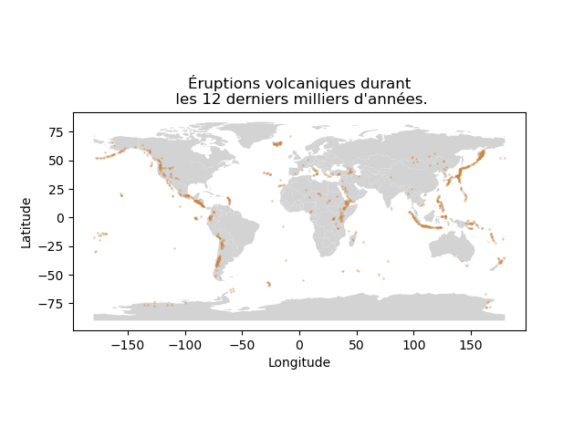

Ce TP est la suite du contrôle 1.
On suppose que toutes les questions du contrôle ont été réalisées.
Lorsque l'on traite des données contenant des informations géographiques, il est courant de souhaiter les représenter sur une carte pour obtenir quelque chose comme cela :

Pour faire cela, on procède comme suit.
On a besoin d'importer le paquetage geopandas.
S'il n'est pas installé, vous devez le faire. Sous Ubuntu vous faites :
c'est fait. Vous pouvez maintenant importer geopandas.
Si contrairement à ce que je recommande vous n'êtes pas sous Ubuntu, je ne sais pas comment il faut faire. À vous de trouver.
Pour réaliser le graphique ci-dessus, on fait ainsi :
import geopandas as gpd
planisphere = gpd.read_file (gpd.datasets.get_path ("naturalearth_lowres"))
fig, ax = plt.subplots ()
planisphere.plot (color = "lightgrey", ax = ax)
volcano.plot (x = "longitude", y = "latitude", kind = "scatter",
color = "peru", alpha = 0.3, s = 1,
title = f"Éruptions volcaniques durant\n les 12 derniers milliers d'années.",
ax = ax)
ax.set_xlabel ("Longitude")
ax.set_ylabel ("Latitude")
fig.show ()
Quelques informations :
À faire :
Nous avons étudié un jeu de données contenant des éruptions volcaniques. Chaque volcan est décrit dans un autre jeu de données qui contient des informations générales à propos de chaque volcan.
Ce jeu de données est disponible à cette url : https://philippe-preux.github.io/ensg/miashs/l3-sd2/datasets/volcanos/volcano.csv.
On va utiliser ce second jeu de données en complément du premier qui contient les éruptions.
À faire : charger ce jeu de données. Appelons volcans ce jeu de données.
L'attribut volcano_number fait le lien entre les deux : ainsi, la première éruption du jeu de données éruptions a eu lieu sur le volcan numéro 266030. Dans le jeu de données volcans, on retrouve le volcan avec ce numéro. Il a bien le même nom dans les deux jeux de données mais en plus, dans volcans, on a des informations sur son type, l'année de sa dernière éruption (que l'on retrouve dans érptions), le pays où il se trouve, ses coordonnées géographiques, sa composition rocheuse, et des informations sur la population alentour, dans un rayon de 5, 10, 30 et 100 km.
À faire :